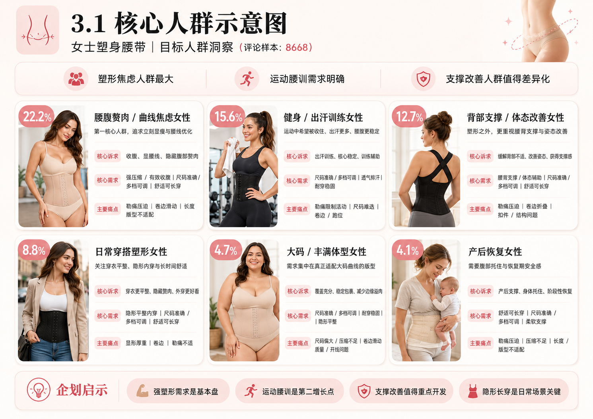
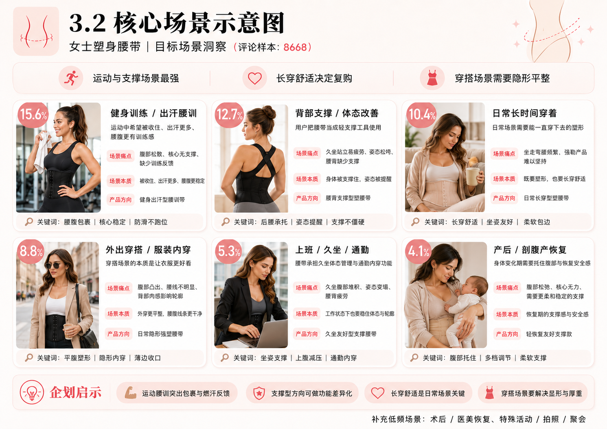

女士塑身腰带目标人群与场景洞察
3.目标人群&场景分析｜评论样本：8668
塑身腰带不是单纯的“收腰产品”，而是围绕塑形焦虑、运动腰训、腰背支撑、日常长穿和穿搭平整的综合体验品类。
22.2%最大人群：腰腹赘肉/曲线焦虑女性
15.6%最高场景：健身训练/出汗腰训
12.7%高星级机会：背部支撑/体态改善
19.1%最大痛点：尺码与版型适配
第一判断
塑形焦虑人群最大，强收腹、显腰线、隐藏腹部赘肉仍是基础盘。
第二判断
运动腰训和背部支撑需求明确，产品不能只强调“勒紧”，还要体现稳定、支撑和不跑位。
第三判断
好评来自质量、舒适、压缩支撑和即时塑形；差评主要来自尺码版型、勒痛、卷边和耐久问题。
Audience Insight
3.1 人群洞察
用户画像显示，塑形和尺码问题压倒性领先。以下示意图按你提供的视觉素材呈现核心人群，每个人群均有对应画像。

| 人群类型 | 提及条数 | 占总评论比例 | 平均星级 | 1-2星占该人群比例 |
|---|---|---|---|---|
| 腰腹赘肉/曲线焦虑女性 | 1923 | 22.20% | 4.27 | 11.70% |
| 健身/出汗训练女性 | 1352 | 15.60% | 4.21 | 13.30% |
| 背部支撑/体态改善女性 | 1104 | 12.70% | 4.51 | 6.70% |
| 日常穿搭塑形女性 | 765 | 8.80% | 4.22 | 12.50% |
| 大码/丰满体型女性 | 405 | 4.70% | 3.99 | 18.80% |
| 产后恢复女性 | 358 | 4.10% | 4.47 | 8.10% |
| 术后/医美恢复女性 | 195 | 2.20% | 4.47 | 8.20% |
| 更年期/体重变化女性 | 71 | 0.80% | 4.52 | 7.00% |
Scenario Insight
3.2 场景洞察
场景差异决定产品语言。运动要解决包裹、出汗和核心稳定；支撑要解决久站久坐疲劳；日常长穿要解决舒适；穿搭要解决隐形平整。

| 场景 | 场景提及 | 场景痛点 | 场景本质 | 产品方向 | 核心设计关键词 |
|---|---|---|---|---|---|
| 健身训练/出汗腰训 | 1352条，占15.6% | 运动时想加强腰腹包裹和出汗感，但普通运动中腹部松散、核心无支撑。 | 运动中被收住、出汗更多、腰腹更有训练感。 | 健身出汗型腰训带。 | 腰腹包裹、核心稳定、出汗反馈、运动支撑、贴合不跑位 |
| 背部支撑/体态改善 | 1104条，占12.7% | 久坐、站立、运动或产后抱娃时腰背疲劳、姿态松垮。 | 身体被支撑住。 | 腰背支撑型塑腰带。 | 后腰承托、姿态提醒、腰背稳定、腹背联动、支撑不僵硬 |
| 日常长时间穿着 | 902条，占10.4% | 坐、走、弯腰、吃饭等真实生活动作下，普通强勒产品难以长时间坚持。 | 能一直穿下去的塑形。 | 日常长穿型塑腰带。 | 长穿舒适、压力分区、坐姿友好、柔软包边、低负担支撑 |
| 外出穿搭/服装内穿 | 765条，占8.8% | 腹部凸出、腰线不明显、背部肉感影响服装轮廓。 | 让衣服更好看。 | 日常隐形强塑腰带。 | 平腹塑形、隐形内穿、背部平顺、薄边收口、低凸起结构 |
| 上班/久坐/通勤 | 463条，占5.3% | 办公久坐时腹部堆积、姿态变塌、腰背疲劳。 | 久坐体态管理和工作服内的隐形塑形。 | 久坐友好型支撑腰带。 | 坐姿支撑、上腹减压、腰背稳定、通勤内穿、办公体态 |
| 产后/剖腹产恢复 | 358条，占4.1% | 腹部松弛、核心无力、身材变化和安全感下降。 | 身体变化期的支撑和安全感。 | 轻恢复友好支撑款。 | 腹部托住、柔软支撑、多档调节、恢复安全感、阶段性适配 |
| 术后/医美恢复 | 195条，占2.2% | 需要稳定压缩和身体固定感，担心恢复期腹部不稳定。 | 恢复过程中的稳定压缩和身体保护感。 | 术后轻压缩支撑方向可作参考，不建议主线医疗化表达。 | 稳定压缩、压力可调、亲肤内里、腹部覆盖、非医疗化支撑 |
| 特殊活动/拍照/聚会 | 低频提及 | 希望短时间快速改善腰腹轮廓，让衣服上身更好看。 | 即时变好看。 | 营销辅助场景，不建议单独开发。 | 即时收腰、裙装内穿、拍照显瘦、快速塑形、轮廓优化 |
Positive Review Baseline
3.3 好评必备基础条件
质量好/耐穿
2576
占总评论 29.7%
材料、拉链、钩扣、骨条质量带来信任感。
舒适/柔软
2256
占总评论 26.0%
强支撑同时降低体感压迫，用户愿意长时间穿。
压缩/支撑足
2139
占总评论 24.7%
满足 waist trainer 的基础购买预期，有被 hold in 的感觉。
收腹塑形明显
1656
占总评论 19.1%
即时塑形结果可见，是转化和好评核心。
尺码合适/调节友好
1204
占总评论 13.9%
降低买错风险，多档调节让不同阶段都能穿。
改善体态/缓解背痛
839
占总评论 9.7%
腰背支撑带来额外功能价值。
不卷边/不滑落
227
占总评论 2.6%
运动、久坐、日常场景体验稳定。
内穿平整/隐形
206
占总评论 2.4%
解决穿搭场景最关键的外观焦虑。
Core Pain Points
3.4 核心需解决痛点
尺码与版型适配
1659
占总评论 19.1%
最大痛点大类，直接影响大码、曲线身材、长/短躯干用户体验。
- 大码/曲线身材不适配：520条
- 尺码偏大/压缩不足：506条
- 尺码偏小/穿不上：434条
- 长躯干覆盖不足：280条
- 短躯干/身高不适配：178条
强压缩与舒适冲突
1013
占总评论 11.7%
强塑形必须成立，但不能以勒痛、顶肉、限制活动为代价。
- 勒痛/压迫感强：886条
- 硬骨/边缘顶肉：510条
- 限制呼吸/活动：278条
- 坐下/弯腰不适：194条
结构与耐久风险
759
占总评论 8.8%
质量感来自材料、钩扣、拉链、骨条、车缝和魔术贴等结构细节。
- 材质廉价/强度不足：481条
- 开线/破损/骨条外露：294条
- 钩扣/扣眼损坏或难扣：219条
- 拉链爆开/拉不上：211条
- 魔术贴粘性/拉扯问题：79条
场景稳定性
626
占总评论 7.2%
- 卷边/上卷：387条
- 折叠/弯折/起褶：204条
- 活动场景下不稳定：197条
- 滑动/跑位：91条
皮肤与闷热负担
302
占总评论 3.5%
- 皮肤痒/过敏/红疹：272条
- 闷热/汗味/异味：89条
- 需要隔层穿着：15条
穿搭轮廓焦虑
288
占总评论 3.3%
- 衣服下显形：199条
- 厚重/体积感明显：155条
- 背部鼓包/边缘溢肉：43条
- 不适合外出/正式穿搭：4条
穿脱与调节门槛
156
占总评论 1.8%
- 独立穿上困难：144条
- 扣合/拉链步骤复杂：63条
- 脱下/撕开困难：11条